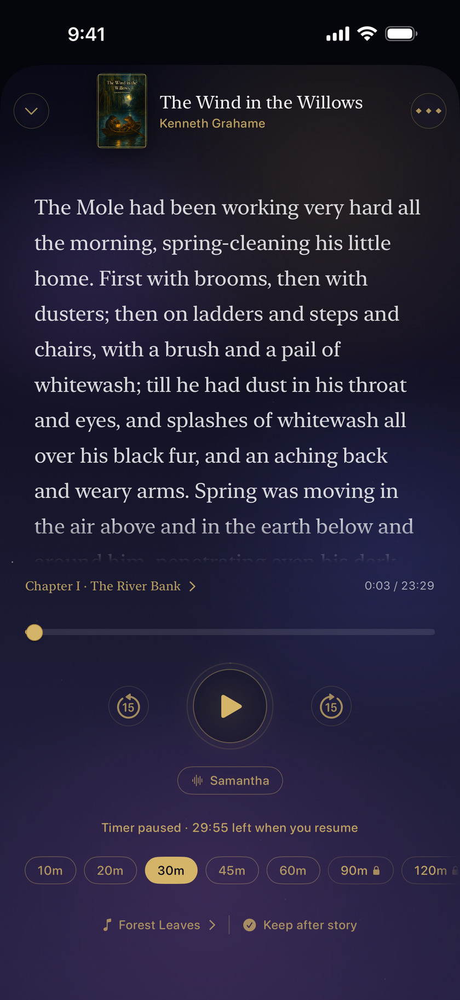
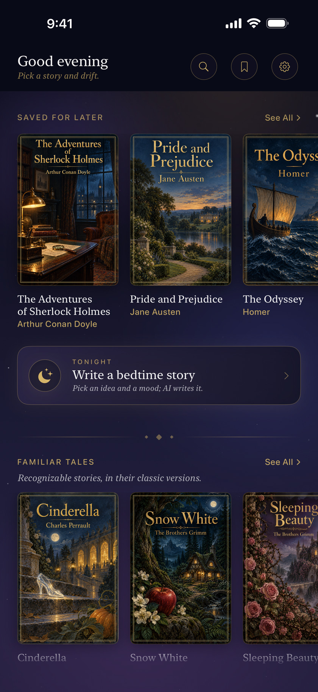

Find your story
Return to a familiar world, or follow your curiosity somewhere new.
A quieter kind of evening
Leave the day on the last page. Settle into a timeless book, a gentle voice, and the sound of rain outside.
Start with the free shelf. Made for iPhone.


An old friend, or a new favorite
Austen and adventure. Fairy tales and philosophy. Find a story for the kind of night you’re having, then pick up exactly where you left off.
Browse classic books, familiar tales, short listens, and AI-written Nightshelf Originals.
Save a book to your shelf. Your reading place will be waiting when you return.
Read along or close your eyes. The on-device voice works offline; Pro adds AI narration.
Made for the last minutes of the day
Choose a story. Make the room your own.
Let Nightshelf take it from there.
Inside Nightshelf · Real screens from Nightshelf.
Keep favorites close and find something for tonight.
Read along, listen, and let the sleep timer fade out.
Mira and Rowan bring a different warmth to the page.

Rain, leaves, music, and more, beneath the story.
Choose an idea and mood. Pro writes a new story with AI.
Screens shown from versions 1.9.10–1.9.11. Tap a screen to see it up close. Some features require Nightshelf Pro. Availability follows your installed version.
The voices and sounds of Nightshelf
Try a narrator. Choose a background sound. Hear them together, just as you can in the app.
Find the voice for your evening.
AI narrators
AI-generated narration at the app’s default pace. Mira and Rowan are included with Nightshelf Pro from version 1.9.10.
On-device voices
Nightshelf also reads with voices installed on your iPhone, for free and offline.
Every sound plays offline in the app.
Sound off
Short previews of all fourteen choices. In the app, a sound can play beneath your story or continue after it ends.
Your evening, unhurried
Return to a familiar world, or follow your curiosity somewhere new.
Choose a voice, add a soundscape, and set a sleep timer.
Let the narration fade. Your place stays, even when you drift.
A little more room to wander
Keep it simple, or open up more
with Nightshelf Pro.
Included, from the first night
Start with free classic books, selected tales, and Nightshelf Originals.
Nightshelf Pro
Explore more of the library and make the evening a little more your own.
Plans and current prices are shown in the app.
No. There's nothing to sign up for and no password to remember. Your reading progress, saved shelf and supported reading settings can sync through your own private iCloud. Ambient sound choices and their volume stay on this device. Nightshelf keeps no server copy of your synced progress.
The free shelf includes classic books, Nightshelf Originals and selected tales. The app labels which choices are free and which are included with Pro. You get the on-device voice, every sound and piece of sleep music, the sleep timer, and screen dimming, with no time limit and no ads. Nightshelf Pro opens more of the library, AI narrators (Mira and Rowan from 1.9.10), 90- and 120-minute sleep timers, and Tonight's Story. Prices are shown in the app, and the annual plan includes a 7-day free trial if your Apple Account is eligible.
Yes, the whole shelf does. Every book ships inside the app, and the on-device voice reads any of them with the network off, ambient sound and sleep timer included. Only the AI narrators and Tonight's Story need a connection.
The library includes novels, collections, retellings and selected tales. Editions can omit illustrations, notes or other supporting material. In the player, open More options → About this book for a title’s format, source and credits.
Your own words go nowhere unless you say so. Reading, listening in your iPhone's voice, ambient sound, and the timer all happen on your phone. Tonight's Story, and an AI narrator reading a story you made, ask your permission before anything you chose or typed leaves; say no and they stay off while everything else keeps working. From Nightshelf 1.9.3, AI narrators can read the books that come with Nightshelf without asking, and they are on from the start. In 1.9.10, Mira reads your first few minutes once on each iPhone, or Mira or Rowan reads with Nightshelf Pro; earlier versions use Nova for the welcome and Automatic. The paragraph being read and a small amount ahead go to Nightshelf's server, which sees your IP address as any website does and keeps a scrambled daily character count to limit use (with Pro, the request also carries the ID and receipt the privacy policy describes), and on to OpenAI, which gets only that text, the narrator's name and a reading-style note, with no ID. Settings → AI features → AI narrators for Nightshelf's books turns that off; versions 1.9.2 and earlier ask before any cloud narration. Auditioning a narrator with ▶ doesn't ask first, because it sends a fixed sample sentence, never anything of yours. The privacy policy names every stop your words make.
Now. Nightshelf is on the App Store for iPhones running iOS 17 or later. The whole app stays dark, because it's made for the last minutes of the day.
The day can end here
Your next favorite evening ritual is waiting.
Get Nightshelf for iPhone